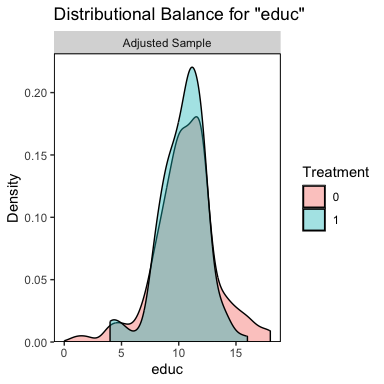
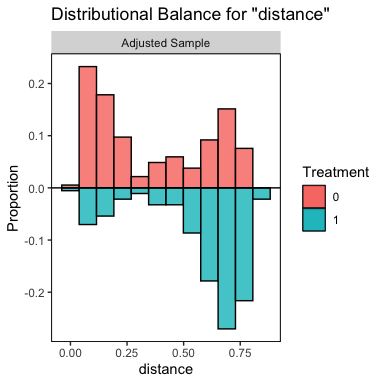
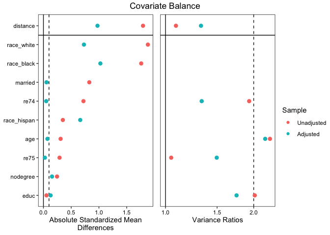

Overview
Welcome to cobalt, which stands for Covariate Balance Tables (and Plots). cobalt allows users to assess balance on covariate distributions in preprocessed groups generated through weighting, matching, or subclassification, such as by using the propensity score. cobalt’s primary function is bal.tab(), which stands for “balance table”, and is meant to replace (or supplement) the balance assessment tools found in other R packages. To examine how bal.tab() integrates with these packages and others, see the help file for bal.tab() with ?bal.tab, which links to the methods used for each package. Each page has examples of how bal.tab() is used with the package. There are also five vignettes detailing the use of cobalt, which can be accessed at vignette("cobalt"): one for basic uses of cobalt, one for the use of cobalt with additional packages, one for the use of cobalt with multiply imputed and/or clustered data, one for the use of cobalt with longitudinal treatments, and one for the use of cobalt to generate publication-ready plots. Currently, cobalt is compatible with output from MatchIt, twang, Matching, optmatch, CBPS, ebal, WeightIt, designmatch, sbw, MatchThem, and cem as well as data not processed through these packages.
For more information, check out the cobalt website!
Why cobalt?
Most of the major conditioning packages contain functions to assess balance; so why use cobalt at all? cobalt arose out of several desiderata when using these packages: to have standardized measures that were consistent across all conditioning packages, to allow for flexibility in the calculation and display of balance measures, and to incorporate recent methodological recommendations in the assessment of balance. In addition, cobalt has unique plotting capabilities that make use of ggplot2 in R for balance assessment and reporting.
Because conditioning methods are spread across several packages which each have their idiosyncrasies in how they report balance (if at all), comparing the resulting balance from various conditioning methods can be a challenge. cobalt unites these packages by providing a single, flexible tool that intelligently processes output from any of the conditioning packages and provides the user with both useful defaults and customizable options for display and calculation. cobalt also allows for balance assessment on data not generated through any of the conditioning packages. In addition, cobalt has tools for assessing and reporting balance for clustered data sets, data sets generated through multiple imputation, and data sets with a continuous treatment variable, all features that exist in very limited capacities or not at all in other packages.
A large focus in developing cobalt was to streamline output so that only the most useful, non-redundant, and complete information is displayed, all at the user’s choice. Balance statistics are intuitive, methodologically informed, and simple to interpret. Visual displays of balance reflect the goals of balance assessment rather than being steps removed. While other packages have focused their efforts on processing data, cobalt only assesses balance, and does so particularly well.
New features are being added all the time, following the cutting edge of methodological work on balance assessment. As new packages and methods are developed, cobalt will be ready to integrate them to further our goal of simple, unified balance assessment.
Examples
Below are examples of cobalt’s primary functions:
library("cobalt")
data("lalonde", package = "cobalt")
#Nearest neighbor matching with MatchIt
m.out <- MatchIt::matchit(treat ~ age + educ + race + married +
nodegree + re74 + re75,
data = lalonde)
#Checking balance before and after matching:
bal.tab(m.out, thresholds = c(m = .1), un = TRUE)#> Balance Measures
#> Type Diff.Un Diff.Adj M.Threshold
#> distance Distance 1.7941 0.9739
#> age Contin. -0.3094 0.0718 Balanced, <0.1
#> educ Contin. 0.0550 -0.1290 Not Balanced, >0.1
#> race_black Binary 0.6404 0.3730 Not Balanced, >0.1
#> race_hispan Binary -0.0827 -0.1568 Not Balanced, >0.1
#> race_white Binary -0.5577 -0.2162 Not Balanced, >0.1
#> married Binary -0.3236 -0.0216 Balanced, <0.1
#> nodegree Binary 0.1114 0.0703 Balanced, <0.1
#> re74 Contin. -0.7211 -0.0505 Balanced, <0.1
#> re75 Contin. -0.2903 -0.0257 Balanced, <0.1
#>
#> Balance tally for mean differences
#> count
#> Balanced, <0.1 5
#> Not Balanced, >0.1 4
#>
#> Variable with the greatest mean difference
#> Variable Diff.Adj M.Threshold
#> race_black 0.373 Not Balanced, >0.1
#>
#> Sample sizes
#> Control Treated
#> All 429 185
#> Matched 185 185
#> Unmatched 244 0
#Examining distributional balance with plots:
bal.plot(m.out, var.name = "educ")
bal.plot(m.out, var.name = "distance",
mirror = TRUE, type = "histogram")
#Generating a Love plot to report balance:
love.plot(m.out, stats = c("mean.diffs", "variance.ratios"),
thresholds = c(m = .1, v = 2), abs = TRUE,
binary = "std",
var.order = "unadjusted")
Please remember to cite this package when using it to analyze data. For example, in a manuscript, you could write: “Matching was performed using the Matching package (Sekhon, 2011), and covariate balance was assessed using cobalt (Greifer, 2024), both in R (R Core Team, 2023).” Use citation("cobalt") to generate a bibliographic reference for the cobalt package.
Bugs appear in cobalt occasionally, often found by users. Please report any bugs at https://github.com/ngreifer/cobalt/issues. To install the latest development version of cobalt, which may have removed a bug you’re experiencing, use the following code:
devtools::install_github("ngreifer/cobalt")